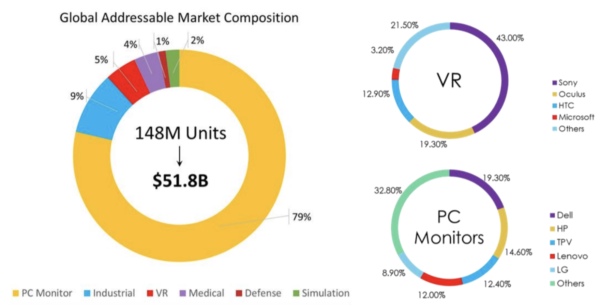

Ultra reality displays surpass monitors and allow immersive experiences
We live in an era where telework and immersive computer experience are at their peak, but there is still no compelling platform to enable that. Today, users have two ways to receive visual information from their computers: monitors and VR headsets.
PC monitors use a lot of desktop space and can’t provide immersion. Even multi-monitor setups have drawbacks like tiling lines and complicated set up. The technology behind flat screen monitors hasn’t changed substantially in decades.
VR headsets provide an immersive experience but significantly compromise performance and comfort. Current headsets are heavy, they stress the eyes, and isolate the user from the surrounding environment. While there is notable work on software platforms to realize metaverse-like experiences, it is evident that the realization of such experiences is a hardware-first problem.
Ultra-reality displays are the missing link between flat monitors and VR headsets, creating an immersive experience in the form factor of traditional monitors.
These monitors will have:
- Ultra-wide view -120” in a 32” monitor size for example
- Ultra-High resolution 8k
- High frame rate 120Hz in large size monitors, customizable to gaming
- High angle of view 100+ degree
Brelyon is one company that Prime Movers Lab screened.
Courtesy of Brelyon
Advancement in materials development will further enable ultra-reality displays. For example, special metamaterials that control lights with an accuracy not possible before.
You can read more about metamaterials with our series on our blog:
- Metamaterials
- Metamaterials Part II
- Metamaterials Part III
- Metamaterials — The Final Chapter